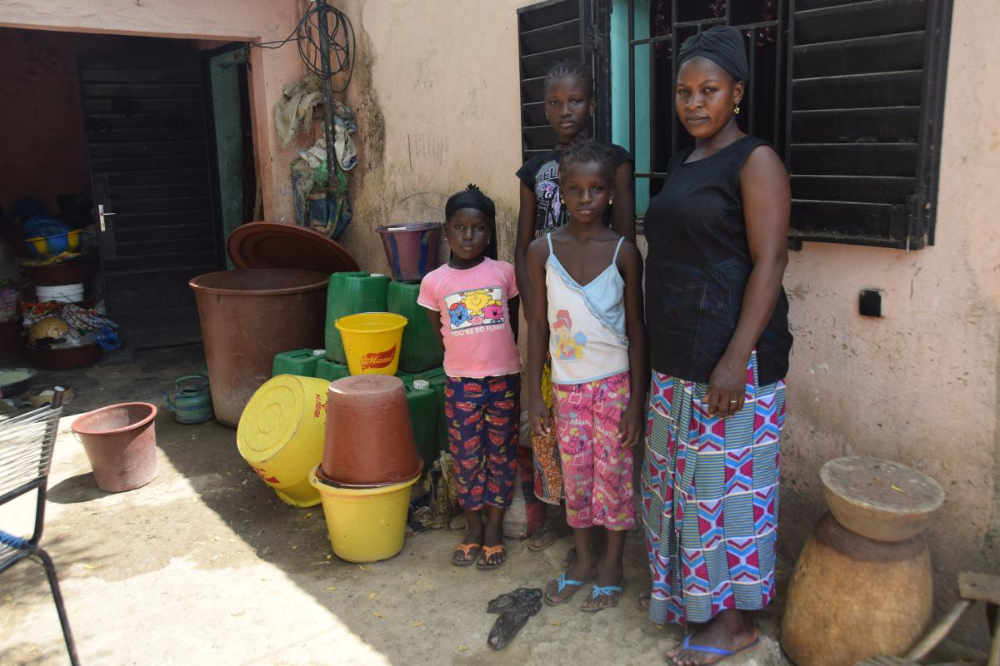
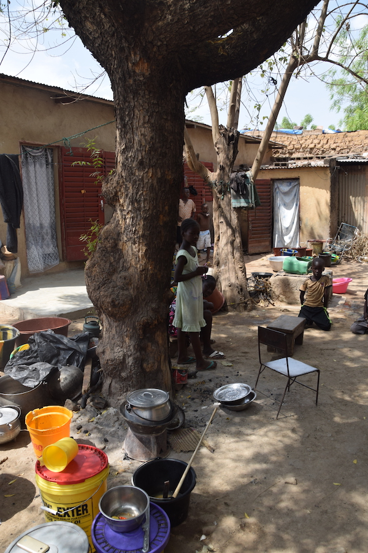

Born: 2004
grade 12
The 13 year-old, 8th grader girl lives in a family with five children. Her father is a mason, her mum sells spices in the market. Only her father attended school. The girl is a very good student, she is the second in class, her average is 15/20. She is cooking when we arrive, she helps a lot to her mother – they pack the spices for the market together and they sell them together on weekends. She just smiles at the question ‘How old are you?’, the relatives have some trouble finding out the exact date. They live in a dilapidated courtyard that have one nice feature: there are two big trees in it. They eat once a day, she gets some money each morning so she can buy some food for herself near the school. Her favourite subject is Maths and she wants to become a doctor.
 For more information contact us at: info@kozelafrikahoz.hu